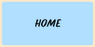
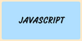
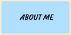
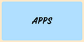

|  |  |  |  |
Hi! This page is about the codes I write as a Computer Science major in URI.
Here is a code I wrote to create a bitmoji of me!
Here is another code that makes my bitmoji dance!
And another code that makes my bitmoji race against a bunny!
Here's my bitmoji drawn in different sizes.
Here's a Medical Diagnosis Decision tree to diagnose dysmenorrhea that I made.
A program where the bitmoji follows the user's mouse.
Here's a program my bitmoji is in the rain.
Here is a roster app I made.
Here is my version of the popular mash game, only using my bitmoji!